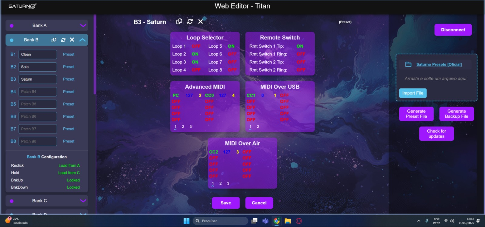
I am a Brazilian Software Engineer currently living in Minas Gerais, seeking for new opportunities to continue developing my skills. I have experience working as a full‑stack web developer, including remote collaboration and agile methodologies such as Scrumban.
A fully custom-built website created to allow Saturn Pedals customers to visually configure their controllers' via MIDI Protocol. Through intuitive tables, dynamic popups, and a clear interface, users can easily create, edit, and export their controller settings directly from the browser.
' Controllers are external devices used to manage and switch effects settings for connected
pedals", providing quick and convenient control during live performances or studio sessions
" Pedals are devices used by guitarists to modify and shape their sound.

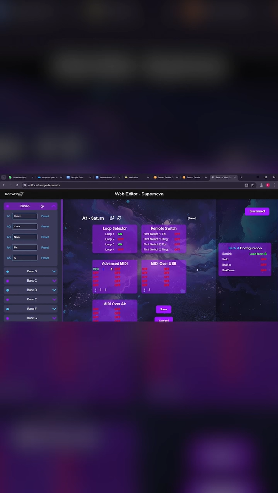

The successor to the Saturn Controllers Editor, this project was built to configure effect presets for Saturn Pedals devices. It allows users to edit parameters, manage pedal settings, and apply changes directly to the hardware through a clean and intuitive interface.
A second version was later developed, introducing backup creation, sound sharing, and access to official presets provided by the company. The website dynamically fetches data from the database and updates the pedal in real time.
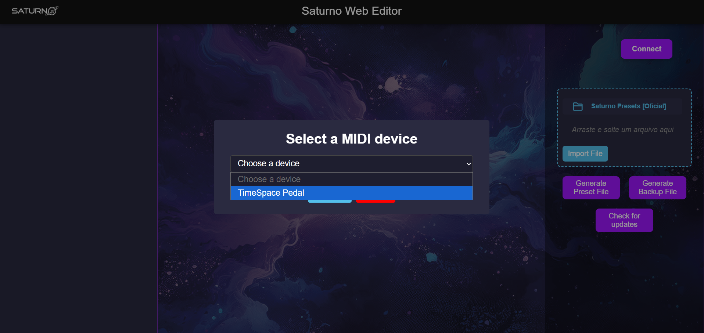
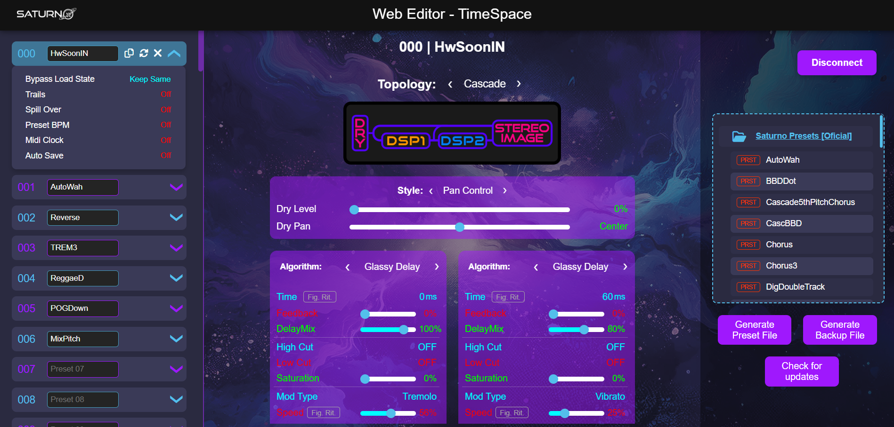
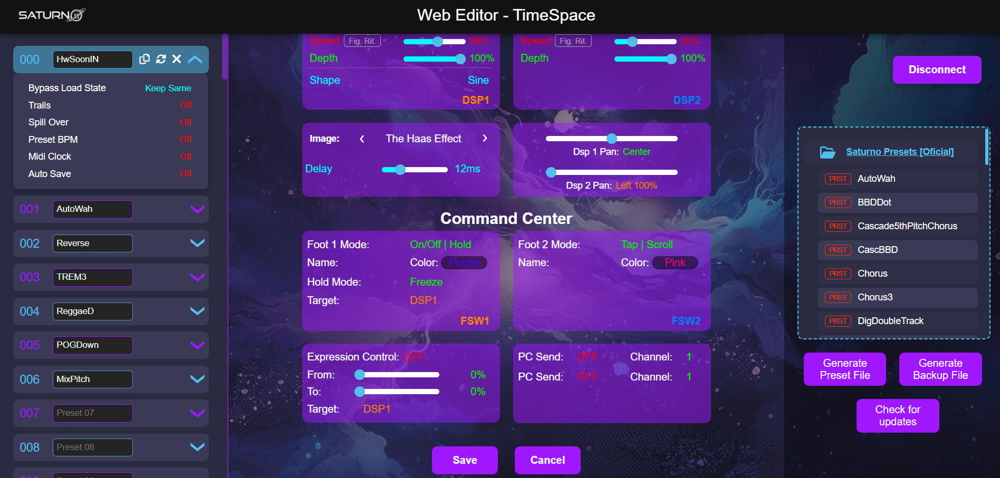

This section showcases feedback from the community based on the launch of the Saturno Pedals projects. Screenshots highlight comments and reactions from users.
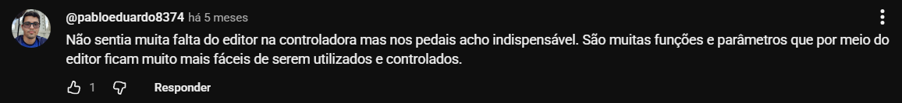
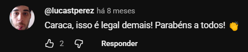
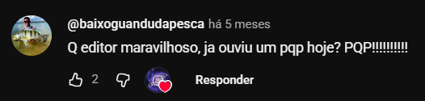
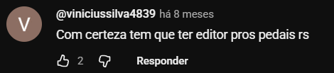
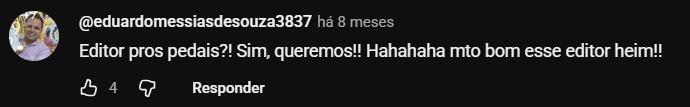
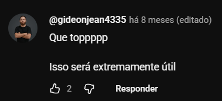
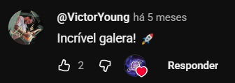
Since I was young, I have always been passionate about technology. My curiosity about how things work and the
desire to create something of my own naturally led me toward programming. In 2020, I took an important step
and started college, but this moment coincided with one of the most unusual periods of our time: the
COVID-19 pandemic.
Just one month after the beginning of the semester, all classes transitioned to remote learning. It was a
challenging period. Adapting to the online format was challenging at first and affected the routine, and even
motivation. However, it also taught me discipline, autonomy, and how to learn independently. I believe this
experience shaped me into a more resilient professional and prepared me for hybrid or fully remote work
environments, which have become increasingly common in the tech industry.
In 2022, after two years of remote classes, I returned to in-person learning. The transition felt strange at
first, but everything eventually regained its rhythm. I kept progressing without further interruptions until
I completed my degree in 2024, officially becoming a Software Engineer, an achievement that represented not
only technical growth but also perseverance through an unprecedented time.
In 2025, I was hired by Saturno Pedais, where I worked throughout the year as a full-stack web developer. I
develoed every part of the project, from backend logic to user-facing interfaces, and each delivery
felt rewarding, as if I had truly found my purpose. This experience strengthened my passion for development
and for building complete, meaningful solutions.
I am currently seeking new opportunities to continue improving my skills and
contributing to innovative projects. My goal is to keep evolving as a professional and explore even more of
the vast world of technology that has fascinated me since childhood.